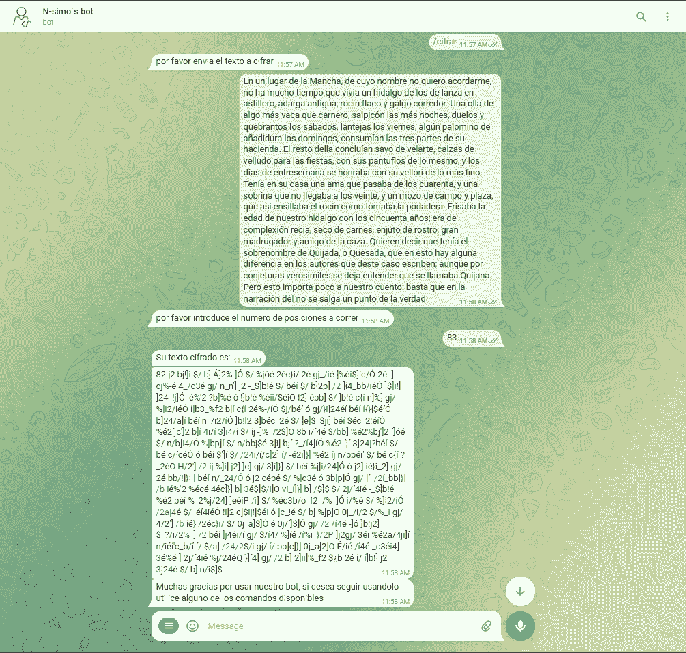
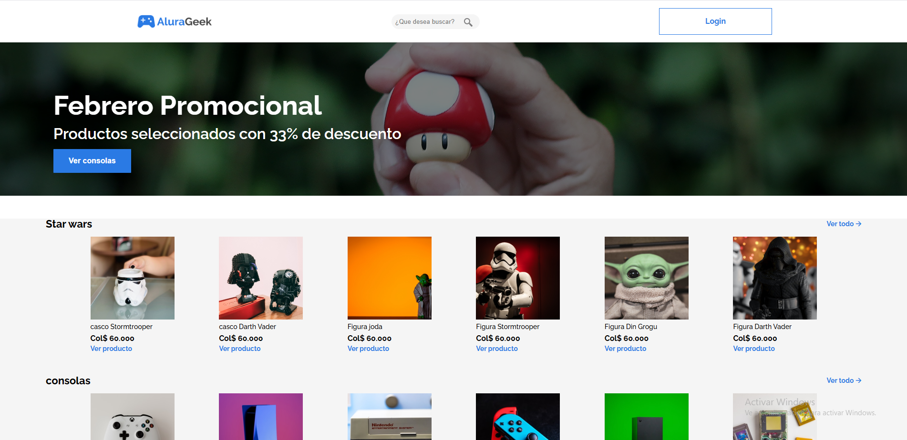

< Nefer Medina />
|
Soy Nefer medina, ingeniero de sistemas recién graduado, con fuertes conocimientos en temas del desarrollo fullstack pero a su vez también tengo gran conocimientos y pasión por temas de inteligencia artificial, machine learning, la automatización, el desarrollo móvil y el desarrollo de software y soluciones.
| Habilidades | |
|---|---|
| Lenguajes |
|
| FrontEnd |
|
| BackEnd |
|
| Cloud |
|
| Otros |

|
Mi gran pasión por la tecnología me ha llevado a aprender mucho acerca de temas de la programación y el desarrollo, siempre estoy en constante aprendizaje y me gusta estar al tanto de las últimas tendencias en tecnología. Me considero una persona proactiva, responsable y con muchas ganas de aprender y crecer en el mundo de la tecnología.
Practicas profesionales realizadas en la empresa de ISA Transelca
por un periodo de 6 meses, donde se me encargaba la tarea de
optimizar y automatizar distintos procesos que contenía la
empresa.
Durante este periodo, me encargaba de la gestión de los diferentes
proyectos de la empresa, así como de las tareas de optimización y
automatización de los procesos que se realizaban en el entorno de
trabajo.
Haz click para ver mas
Mi proyecto de grado que combina inteligencias artificiales para detectar arritmias cardíacas.
Ganador de la feria de proyectos de ingeniería de Sistemas.
Haz click para ver mas
Proyecto universitario que consiste en crear un chatbot de Telegram que pueda cifrar y descifrar mensajes de texto, así como enviarlos a un usuario.
Haz click para ver mas
Proyecto realizado en el Curso Oracle ONE junto con Alura que consiste en crear un E-Comerce con una tienda de productos.
Haz click para ver mas